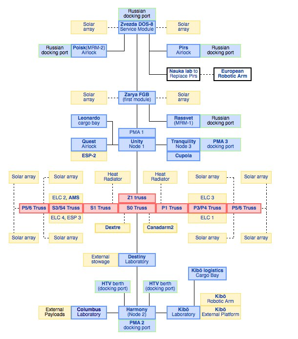

Why YUI?
Derek Gathright, Yahoo! Inc.
Who is this guy?
- Derek Gathright
- Software engineer, Yahoo!
- YUI team
- Yahoo! Media
- ... various startups
- <3 open-source
- <3 JavaScript
- Twitter & Github as @derek
What is this talk about?
Why YUI?
#1: Architecture

Modularity
JS Modules
// yuiblog.com/blog/2007/06/12/module-pattern/
myLibrary.fizzbuzz = (function () {
var somePrivateVar = "Fizz";
return {
fizzbuzz: myPrivateVar + " Buzz"
};
})();
YUI Modules
// fizzbuzz.js
YUI.add("fizzbuzz", function(Y){
// Private variable
var myPrivateVar = "Fizz";
// Export as public variable
Y.fizzbuzz = myPrivateVar + " buzz";
});
JS Modules
Emerging standards
- AMD (Asynchronous Module Definition)
- CommonJS Modules/1.1
- CommonJS Modules/2.0 (draft)
- ... and more
Eventual goal: ECMAScript Modules. Still just a proposal, and incompatible with ES3. :(
What do you gain from modularity?
Extensibility
Don't hack
Extend
Myth: "YUI is too enterprisey"
Enterprisey?
Enterprisey?

yuilibrary.com
Why YUI?
#2: Infrastructure
Toolkit

Tools
// DOM
YUI().use('node', function (Y) { ... });
// Canvas/SVG/VML graphics
YUI().use('graphics', function (Y) { ... });
// Calendar widget
YUI().use('calendar', function (Y) { ... });
// YQL client
YUI().use('yql', function (Y) { ... });
YUI Loader
Loading modules
So we organized into modules, great!
<head>
<script src='/js/coreLibrary.js'> </script>
<script src='/js/moduleA.js'> </script>
<script src='/js/moduleB.js'> </script>
<script src='/js/moduleC.js'> </script>
<script src='/js/moduleD.js'> </script>
...
</head>
Goal of a module loader?
To optimize and simplify the process of loading modules.
How?
- Async loading
- Automatic dependency resolution
- On-demand module loading
- CSS support
- ... and more
YUI Loader
YUI Modules example (again)
// fizzbuzz.js
YUI.add("fizzbuzz", function(Y){
// Private variable
var myPrivateVar = "Fizz";
// Export as public variable
Y.fizz = myPrivateVar + " buzz"
}
YUI Loader
<!DOCTYPE html>
<html>
<script src='http://yuim.in/'></script>
<script>
YUI().use('fizzbuzz', function(Y) {
console.log(Y.fizz) // "Fizz buzz"
});
</script>
</html>
YUI Loader
<!DOCTYPE html>
<html>
<script src='http://yuim.in/'></script>
<script>
YUI({
modules:{
fizzbuzz:{ fullpath: 'path/to/fizzbuzz.js' }
}
}).use('fizzbuzz', function(Y) {
console.log(Y.fizz) // "Fizz buzz"
});
</script>
</html>
YUI Loader
// Example @ http://jsfiddle.net/derek/sfcsE/
YUI({
modules: {
'jquery': {
fullpath: 'jquery.min.js',
condition: 'before' },
'jCarousel': {
fullpath: 'jquery.jcarousel.min.js',
requires: ['jquery', 'jCarouselCSS'] },
'jCarouselCSS': {
fullpath: 'skin.css',
requires: ['jCarouselCSS'],
type: 'css' }
}
}).use('jCarousel', function(Y) { ... });
Combo-loading
Addresses the problem of one-module-per-HTTP-request.
Instead of:
GET moduleA.js
GET moduleB.js
GET moduleC.js
= 3 HTTP requests
Combo-loading
You get:
GET moduleA.js&moduleB.js&moduleC.js
= 1 HTTP request
Combo-loading
What about long URLs?
GET moduleA.js&moduleB.js&moduleC.js
GET moduleD.js&moduleE.js&moduleF.js
= 2 HTTP requests
Combo-loading
+ Modules
+ Loader
= Magic!
More Awesome Stuff
- Events, Base, Plugins, Widgets, ...
- YUI Compressor
- YUI Builder
- YUI Doc, Selleck
- CSS Grids, Reset
- Undocumented stuff hidden in Dav's 91 Github repositories
- ... many more
Why YUI?
Why #3: Open
Open
- Open Source - Github
- Open CDN - YUI Gallery
- Open Hours - Come chat!
- Open Communication - #yui on Freenode
- Open Development
- Open Documentation
Open Source
- 100% open source
- Hosted on Github
- Anyone can contribute to the YUI core
- BSD license (very permissive)
Open CDN
- YUI Gallery
- Let us take care of hosting your code for you!
Open Hours
- Open meeting with the community
- Frequency: Couple times a month
Open Communication
Open Development
- Develop in the open
- Ticketing system, roadmap, task assignments are all visible
Open Documentation
- All website documentation now exists in the yui3 source tree.
- Edit / Update / Create examples
- Selleck documentation generation tool
- jsRosettaStone.com
'Watch' YUI on Github!
Thanks!
Questions?